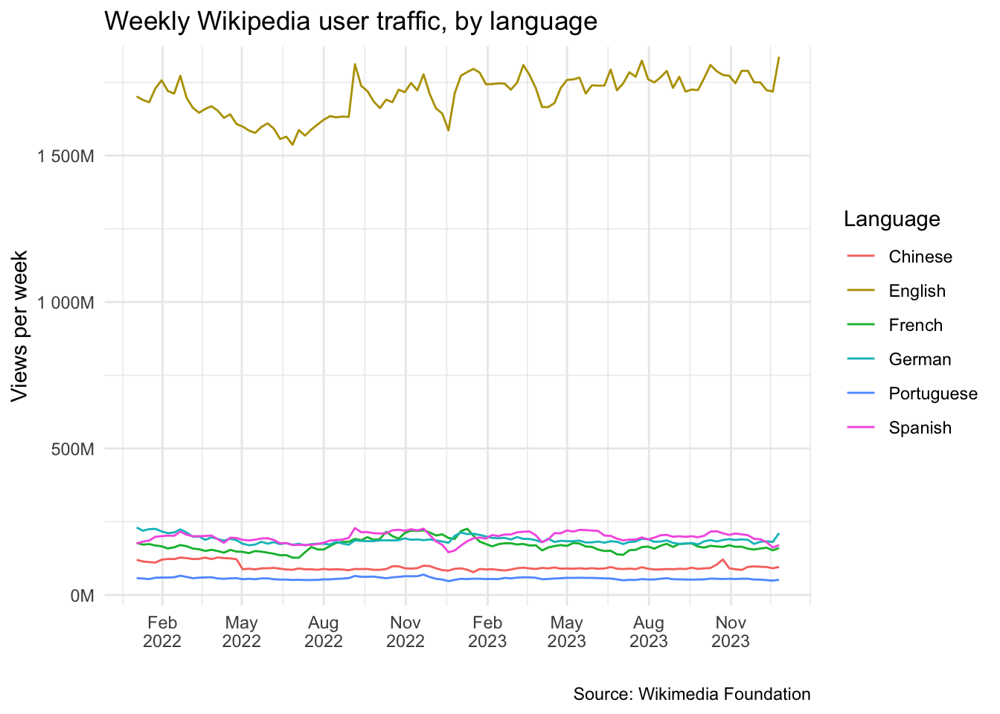

# install dependencies
#remotes::install_github("wikimedia/waxer@main")
# load dependencies
pacman::p_load(
dplyr, # wrangle data
forcats, # factors
ggplot2, # visualize data
glue, # string literals
gt, # formatting tables
here, # file paths
janitor, # tidy & explore data
lubridate, # dates & times
purrr, # vectorize operations
RccpRoll, # time series
readr, # import data
scales, # scaling plots
tidyr, # tidy data
waxer # wikipedia data
)
# load custom functions
source(here("code/funcs/helpers.R"))Data Report
Assessing Public Attention Towards the 2022-2023 Mpox Outbreak Using Wikipedia
Overview
My topic focuses on assessing public attention towards the 2022-2023 multi-country mpox outbreak using Wikipedia data. As such, this analysis relies on two main data sources. First, country-level data on the weekly number of mpox cases is sourced from the World Health Organization (WHO). Second, Wikipedia analytics data on page view volume is sourced directly from Wikipedia.
Before exploring the data, I’ll start by loading all dependencies.
Mpox Case Data
Mpox case data can be further divided into two subgroups based on their level of granularity. First, aggregated case data consists of the daily number of new cases by the date they were reported to public health authorities. Second, detailed case data comprises the daily number of new cases by either date of onset, date of diagnosis, or date or report. While both types of data are reported with a daily frequency at the country-level, their respective advantages and disadvantages give good reason to include both in this analysis.
Aggregated case data
Daily aggregated numbers of mpox cases by country correspond with the date on which cases were reported to public health authorities. One advantage of this dataset is that it is considered to be largely complete since it comprises every confirmed and probable case reported to the national public health authorities.1 While this still leaves room for cases to go underreported in instances where an individual does not seek medical attention (e.g., for fear of stygmatization) or for asymptomatic cases, it still represents the most comprehensive view of the outbreak’s scale. Aggregated data is available for all reported cases as of 31 December 2023.
The aggregated dataset consists of the following variables:
country: The country, area, or territory in which a given case was reported. Note that this does not necessarily correspond with the location where the patient was infected.iso3: Three-letter country codes corresponding with a country, area, or territory.who_region: Regions into which each country, area, or territory has been assigned by WHO. There are six regions: African Region, Region of the Americas, Eastern Mediterranean Region, European Region, South-East Asian Region, and Western Pacific Region.2date: The date on which cases were reported to public health authorities.new_confirmed_cases: The number of new confirmed cases reported to public health authorities on a given date.new_probable_cases: The number of new probable cases reported to public health authorities on a given date.new_deaths: The number of new deaths reported to public health authorities on a given date. This does not necessarily reflect the precise date on which a case died, just the date on which public health authorities were notified of the death.total_confirmed_cases: The cumulative number of confirmed cases reported to public health authorities by a given date.total_probable_cases: The cumulative number of probable cases reported to public health authorities by a given date.total_deaths: The cumulative number of deaths reported to public health authorities by a given date.
# aggregate data
agg <- read_csv(here("data/WHO/mpox cases by country as of 31 December 2023.csv"))
head(agg)| country | iso3 | who_region | date | total_confirmed_cases | total_probable_cases | new_confirmed_cases | new_probable_cases | total_deaths | new_deaths |
|---|---|---|---|---|---|---|---|---|---|
| Benin | BEN | African Region | 2022-06-24 | 3 | 0 | 3 | 0 | 0 | 0 |
| Benin | BEN | African Region | 2022-07-01 | 3 | 0 | 0 | 0 | 0 | 0 |
| Benin | BEN | African Region | 2022-07-08 | 3 | 0 | 0 | 0 | 0 | 0 |
| Benin | BEN | African Region | 2022-07-15 | 3 | 0 | 0 | 0 | 0 | 0 |
| Benin | BEN | African Region | 2022-07-22 | 3 | 0 | 0 | 0 | 0 | 0 |
| Benin | BEN | African Region | 2022-07-29 | 3 | 0 | 0 | 0 | 0 | 0 |
The total number of confirmed cases, probable cases, and deaths worldwide can easily be tabulated.
# extract total cases by country
agg_total <- agg |>
group_by(country) |>
slice_max(date) |>
ungroup() |>
select(country, iso3, who_region, starts_with("total")) |>
arrange(desc(total_confirmed_cases))
# calculate total cases, globally
agg_total |>
summarize(
total_confirmed_cases = sum(total_confirmed_cases),
total_probable_cases = sum(total_probable_cases),
total_deaths = sum(total_deaths)
)| total_confirmed_cases | total_probable_cases | total_deaths |
|---|---|---|
| 93030 | 652 | 176 |
The top 10 countries by number of confirmed cases are the United States of America (31,246), Brazil (10,967), Spain (7,752), France (4,171), Colombia (4,090), Mexico (4,078), the United Kingdom (3,875), Peru (3,812), Germany (3,800), and China3 (2,025).
# total cases, top 10 countries
head(agg_total, 10)| country | iso3 | who_region | total_confirmed_cases | total_probable_cases | total_deaths |
|---|---|---|---|---|---|
| United States of America | USA | Region of the Americas | 31246 | 0 | 55 |
| Brazil | BRA | Region of the Americas | 10967 | 349 | 16 |
| Spain | ESP | European Region | 7752 | 0 | 3 |
| France | FRA | European Region | 4171 | 0 | 0 |
| Colombia | COL | Region of the Americas | 4090 | 0 | 0 |
| Mexico | MEX | Region of the Americas | 4078 | 52 | 34 |
| The United Kingdom | GBR | European Region | 3875 | 0 | 0 |
| Peru | PER | Region of the Americas | 3812 | 0 | 20 |
| Germany | DEU | European Region | 3800 | 0 | 0 |
| China | CHN | Western Pacific Region | 2025 | 0 | 1 |
As of 31 December 2023, mpox cases have been reported by 117 WHO Member States across all six WHO regions. The dataset contains cases reported between 7 January 2022 to 31 December 2023.
# number of countries
unique(agg$country) |> length()
#> [1] 117
# number of WHO regions
unique(agg$who_region) |> length()
#> [1] 6
# date range
range(agg$date)
#> [1] "2022-01-07" "2023-12-31"For this analysis, I will only consider confirmed cases. However, I do not expect this decision to greatly impact the results considering that probable cases only make up 0.7% of overall cases (652/93,682) and only eight countries report any probable cases. While Puerto Rico reports the highest proportion of probable cases at 42% of total cases (150/361), probable cases make up less than 5% of the remaining countries’ total cases.
While WHO collects aggregated data on a daily basis, nearly all countries’ public health authorities report cases at a weekly frequency. As a result, it is more useful to aggregate cases by epidemic week. The epidemic curve below depicts the aggregated weekly number of cases by week reported.
While the global trend appears to have been quite coherent with the number of weekly cases peaking in July 2022, this disguises the fact that the trends in cases looked quite distinct at the WHO region-level.
Here we observe that there is substantial variation between the six WHO regions, with the Eastern Mediterranean Region, European Region, and Region of the Americas following a similar trend with cases peaking in summer/fall 2022, while cases in the South-East Asia Region and Western Pacific Region peak in summer/fall 2023. In contrast, cases reported by the African Region appear to be more uniformly distributed, reflecting the fact that mpox is endemic to certain areas of western and central Africa.
Detailed case data
In addition to aggregated case data, WHO also collects line list data where each row corresponds with an individual case and contains information on demographics, clinical presentation, epidemiological exposure factors, and laboratory testing.4 Due to privacy concerns, line list data is stripped of all personally identifiable information and aggregated by country and date before being made available by WHO.5 In contrast to aggregated case data, the date variable of the detailed case dataset corresponds with either the date of symptom onset, the date of diagnosis (if date of symptom onset is not available), or the date of reporting (if date of symptom onset and date of diagnosis are not available).6 This difference in how cases are assigned to a date grants us a much more granular view of countries’ epidemic curves, as shown below. Dates are aggregated at the weekly level to further protect individual cases’ privacy.
The detailed dataset consists of the following variables:
country: The country, area, or territory in which a given case was reported. Note that this does not necessarily correspond with the location where the patient was infected.iso3: Three-letter country codes corresponding with a country, area, or territory.who_region: Regions into which each country, area, or territory has been assigned by WHO. There are six regions: African Region, Region of the Americas, Eastern Mediterranean Region, European Region, South-East Asian Region, and Western Pacific Region.7date: The date of symptom onset, the date of diagnosis (if date of symptom onset is not available), or the date of reporting (if date of symptom onset and date of diagnosis are not available).8date_type: One of the following: “Onset”, “Diagnosis”, or “Reported”.cases: The number of new confirmed cases on a given date.
# line list data
ll <- read_csv(here("data/WHO/Country data by date of symptom onset.csv")) |>
select(-who_region) |>
rename(
who_region = who_region_long,
date = reference_date
) |>
filter(between(date, as_date("2022-01-01"), as_date("2023-12-31")) | is.na(date)) |>
mutate(date_type = factor(date_type, levels = c("Onset", "Diagnosis", "Reported")))
head(ll)| country | iso3 | who_region | date | date_type | cases |
|---|---|---|---|---|---|
| Andorra | AND | European Region | 2022-06-23 | Onset | 2 |
| Andorra | AND | European Region | 2022-07-07 | Onset | 1 |
| Andorra | AND | European Region | 2022-07-14 | Onset | 1 |
| Argentina | ARG | Region of the Americas | 2022-05-05 | Onset | 1 |
| Argentina | ARG | Region of the Americas | 2022-05-12 | Onset | 1 |
| Argentina | ARG | Region of the Americas | 2022-05-26 | Onset | 1 |
A significant disadvantage of this detailed dataset is that it only contains information 63% for all reported mpox cases (58,883/93,030). This is driven almost entirely by the fact that WHO no longer includes cases from the United States in this dataset, despite the fact that the United States represents 34% of global cases (31,246/93,030). That said, this data can still be useful for analysis of other countries. As such, detailed dataset can complement the aggregated data presented above.
# calculate total cases by country
ll_total <- ll |>
group_by(country) |>
summarize(total_confirmed_cases = sum(cases)) |>
ungroup() |>
arrange(desc(total_confirmed_cases))
# calculate total cases, globally
ll_total |>
summarize(total_confirmed_cases = sum(total_confirmed_cases)) |>
pull(total_confirmed_cases)
#> [1] 58833As of 31 December 2023, detailed mpox case data has been provided by 101 WHO Member States across all six WHO regions. The dataset contains cases from the period of 6 January 2022 to 28 December 2023.
# countries
unique(ll$country) |> length()
#> [1] 101
# WHO regions
unique(ll$who_region) |> length()
#> [1] 6
# date range
range(ll$date)
#> [1] "2022-01-06" "2023-12-28"While WHO collects line list data on a daily basis, this data is aggregated by epidemic week to safeguard the privacy of individual cases. The epidemic curve below depicts the weekly number of cases. Compared to the epidemic curves produced using aggregated data, the detailed data allows us to plot much smoother curves which seem to adhere more closely to the trend we might expect of an infectious disease outbreak.

Again, while the global trend appears to have been quite coherent with the number of weekly cases peaking in July 2022, the trends vary at the WHO region-level.
Wikipedia Data
The Wikimedia Foundation makes it straightforward to access various analytics data related to its projects, including Wikipedia, by providing the Wikimedia Analytics Query Service (AQS) REST API. AQS offers a range of analytics data, such as page view statistics, editor activity levels, and other traffic data from as far back as 1 August 2015. The REST API facilitates the retrieval of analytics data from Wikipedia in a structured way. Given that Wikipedia data is abundant, publicly accessible, and commonly used, many resources exist to easily access this data.9 {waxer} is one such package which serves as a Wikimedia API wrapper that facilitates querying for traffic (pageviews, unique devices), user (e.g. active editors), and content-based metrics (e.g. edits counts, pages counts) from Wikimedia Analytics Query Service with R.
The first step of working with the {waxer} package involves defining the exact Wikipedia projects we are interested in.10 I’ll use English Wikipedia to illustrate how the next steps work.
# define projects
project <- c("en.wikipedia")
# define page names
page_names <- c("Monkeypox virus", "Mpox") Page views
Since this project is concerned with assessing public attention, Wikipedia page view statistics will serve as our primary measure for online information-seeking behavior. We query page view statistics from the AQS REST API using the following specifications:
project: The name of any Wikimedia project, for example en.wikipedia.page_name: The title of any article in the specified project.access_method: The method used to access the article. Options: “desktop”, “mobile app”, “mobile web”, or “all”.agent_type: The type of agent accessing the article. Options: “user”, “bot/spider”, “automated”, or “all”.granularity: The time unit for the response data. Options: “daily” or “monthly”.start_date: The date of the first day to include.end_date: The date of the last day to include.include_redirects: Whether instances in which a user was redirected to an article should count towards the total view count for the destination page. Redirects are usually created for common typos and aliases to make it easier for users to arrive at a single article.11
# query page views
pageviews <- wx_page_views(
project = project,
page_name = page_names,
access_method = "all", # desktop + mobile
agent_type = "user", # human users
granularity = "daily",
start_date = "20220101", # 1 Jan 2022
end_date = "20231231", # 31 Dec 2023
include_redirects = TRUE
)
head(pageviews)| project | page_name | redirect_name | date | views |
|---|---|---|---|---|
| en.wikipedia | Monkeypox virus | NA | 2022-01-01 | 46 |
| en.wikipedia | Monkeypox virus | NA | 2022-01-02 | 47 |
| en.wikipedia | Monkeypox virus | NA | 2022-01-03 | 260 |
| en.wikipedia | Monkeypox virus | NA | 2022-01-04 | 103 |
| en.wikipedia | Monkeypox virus | NA | 2022-01-05 | 55 |
| en.wikipedia | Monkeypox virus | NA | 2022-01-06 | 43 |
We start exploring the dataset by examining the absolute and relative frequency of different values within the project and page_name variables. As expected, all page views are for the English Wikipedia project. Notably, the “Mpox” article has a substantially higher traffic volume than the “Monkeypox virus” article (71% vs. 29%).
# frequency of projects and page names
pageviews[1:2] |>
map(~ tabyl(.x)) |>
set_names(names(pageviews[1:2]))
#> $project
#> .x n percent
#> en.wikipedia 4229 1
#>
#> $page_name
#> .x n percent
#> Monkeypox virus 1235 0.2920312
#> Mpox 2994 0.7079688Next, we explore the missingness of each of variable in the pageviews dataset. We find that redirect_name is the only column missing values. For the specified Wikipedia project and articles, 27% of page views were redirected from other search terms.
# % missing by column
pageviews |>
map_df(~sum(is.na(.)/length(.)) * 100)| project | page_name | redirect_name | date | views |
|---|---|---|---|---|
| 0 | 0 | 27.28777 | 0 | 0 |
Seeing as a substantial number of page views are driven by redirects, it is important to understand whether it is valid to include these redirects in our analysis. If search terms appear related to mpox or the monkeypox virus, then it is safe to assume that this represents online information-seeking behavior towards our topic. Our table shows that all search appear to directly relate to mpox or the monkeypox virus, so we conclude that is valid to include redirects in this analysis. This will be reevaluated and handled as more projects and articles are added to the analysis.
| Redirects for user views | ||
|---|---|---|
| English Wikipedia | ||
| Redirected search | Articles | |
| Monkeypox virus | Mpox | |
| HMPX | 0 | 15 |
| HMPXV | 74 | 0 |
| Human monkeypox | 0 | 486 |
| Moneypox | 0 | 109 |
| Moneypox virus | 69 | 0 |
| Monkey pox | 0 | 711 |
| Monkey Pox | 0 | 417 |
| Monkeypox | 0 | 730 |
| Monkeypox virus (MPV) | 58 | 0 |
| Monkeypox virus (MPXV) | 9 | 0 |
| MPOX | 0 | 102 |
| Mpox virus | 147 | 0 |
| MPXV | 148 | 0 |
Considering that mpox case data is available at a weekly level of granularity, we aggregate page view data by week and plot the results below. We observer two large spikes, with the first centered on May 2022 when non-endemic countries began reporting mpox cases12 and the second centered on late July 2022 when WHO declared mpox to be a Public Health Emergency of International Concern (PHEIC).13 Other smaller peaks can be observed, although the general trend indicates that public attention decreases over time.
Project views
Another element of this project involves developing a baseline for what online information-seeking behavior may have looked like in the absence of the mpox outbreak, as measured by Wikipedia article access. For this, we will use overall project views for the respective Wikipedia projects to detect seasonality and long-term trends in Wikipedia search trends. To illustrate what this looks, we examine the Wikipedia projects corresponding with the most common languages in the top 10 countries by number of mpox cases.
# list of wikipedia projects for languages used in top 10 countries
projects <- c(
"English" = "en.wikipedia", # USA, UK
"Portuguese" = "pt.wikipedia", # Brazil
"Spanish" = "es.wikipedia", # Spain, Colombia, Mexico, Peru
"French" = "fr.wikipedia", # France
"German" = "de.wikipedia", # Germany
"Chinese" = "zh.wikipedia" # China
)
# query page views for multiple projects
project_views <- map_dfr(
projects,
wx_project_views,
access_method = "all", # desktop + mobile
agent_type = "user", # human users
granularity = "daily",
start_date = "20220101", # 1 Jan 2022
end_date = "20231231", # 31 Dec 2023
.id = "language"
)
head(project_views)| language | project | date | views |
|---|---|---|---|
| English | en.wikipedia | 2022-01-01 | 245105524 |
| English | en.wikipedia | 2022-01-02 | 258663949 |
| English | en.wikipedia | 2022-01-03 | 247918961 |
| English | en.wikipedia | 2022-01-04 | 238890676 |
| English | en.wikipedia | 2022-01-05 | 233786134 |
| English | en.wikipedia | 2022-01-06 | 234572499 |
The plot below shows that English Wikipedia predominates overall Wikipedia traffic, with weekly traffic levels for the other language projects clustered together well below.

Appendix
While this Data Report showcases the underlying data structure of Wikipedia page view statistics using as “Mpox” and “Monkeypox virus” articles as mere examples, there are many other articles related to mpox and its symptoms14 that may also contribute to this analysis. Supplemental article titles are listed below. Since article titles have been recorded in English, the next step would be to cross-reference them with their corresponding titles for other Wikipedia projects.
# mpox symptoms
page_names_symptoms <- c(
"Back pain",
"Balanitis",
"Chills",
"Conjunctivitis",
"Cough",
"Diarrhea",
"Edema",
"Encephalitis",
"Fatigue",
"Fever",
"Genital herpes",
"Headache",
"Lesion",
"List of skin conditions",
"Lymphadenopathy",
"Myalgia",
"Myocarditis",
"Proctitis",
"Rash",
"Skin condition",
"Sore throat",
"Urethritis",
"Vomiting"
)
# 2022-2023 mpox outbreak
page_names_mpox <- c(
"2003 Midwest monkeypox outbreak",
"2022–2023 mpox outbreak",
"2022–2023 mpox outbreak in Asia",
"2022–2023 mpox outbreak in Australia",
"2022–2023 mpox outbreak in Austria",
"2022–2023 mpox outbreak in Belgium",
"2022–2023 mpox outbreak in Brazil",
"2022–2023 mpox outbreak in Canada",
"2022–2023 mpox outbreak in Chile",
"2022–2023 mpox outbreak in Colombia",
"2022–2023 mpox outbreak in Europe",
"2022–2023 mpox outbreak in France",
"2022–2023 mpox outbreak in Germany",
"2022–2023 mpox outbreak in Ghana",
"2022–2023 mpox outbreak in India",
"2022–2023 mpox outbreak in Israel",
"2022–2023 mpox outbreak in Italy",
"2022–2023 mpox outbreak in Japan",
"2022–2023 mpox outbreak in Mexico",
"2022–2023 mpox outbreak in the Netherlands",
"2022–2023 mpox outbreak in North America",
"2022–2023 mpox outbreak in Peru",
"2022–2023 mpox outbreak in the Philippines",
"2022–2023 mpox outbreak in Portugal",
"2022–2023 mpox outbreak in the Republic of Ireland",
"2022–2023 mpox outbreak in Singapore",
"2022–2023 mpox outbreak in South Africa",
"2022–2023 mpox outbreak in South America",
"2022–2023 mpox outbreak in Spain",
"2022–2023 mpox outbreak in Switzerland",
"2022–2023 mpox outbreak in Taiwan",
"2022–2023 mpox outbreak in the United Kingdom",
"2022–2023 mpox outbreak in the United States",
"ACAM2000",
"Modified vaccinia Ankara",
"Monkeypox virus",
"Mpox",
"Mpox in Nigeria",
"Mpox in the Democratic Republic of the Congo",
"Orthopoxvirus",
"Poxviridae",
"Smallpox vaccine",
"Timeline of the 2022–2023 mpox outbreak"
)Footnotes
For more information on what constitutes a confirmed or probable case, please refer to WHO’s mpox case definitions: https://www.who.int/emergencies/outbreak-toolkit/disease-outbreak-toolboxes/mpox-outbreak-toolbox↩︎
Cases shown include those reported in mainland China (1,611), Taiwan (333), Hong Kong (80), and Macao (1).↩︎
https://www.who.int/publications/m/item/monkeypox-minimum-dataset-case-reporting-form-(crf)↩︎
Mikhail Popov, Data Science Manager in Product Analytics at the Wikimedia Foundation, has published a list of R packages related to or affiliated with the Wikimedia Foundation here: https://people.wikimedia.org/~bearloga/notes/r-pkgs.html↩︎
A complete collection of Wikipedia projects is available here: https://www.mediawiki.org/wiki/Special:SiteMatrix↩︎
https://www.who.int/emergencies/situations/monkeypox-oubreak-2022↩︎
https://www.who.int/europe/news/item/23-07-2022-who-director-general-declares-the-ongoing-monkeypox-outbreak-a-public-health-event-of-international-concern↩︎
https://www.who.int/news-room/fact-sheets/detail/monkeypox↩︎